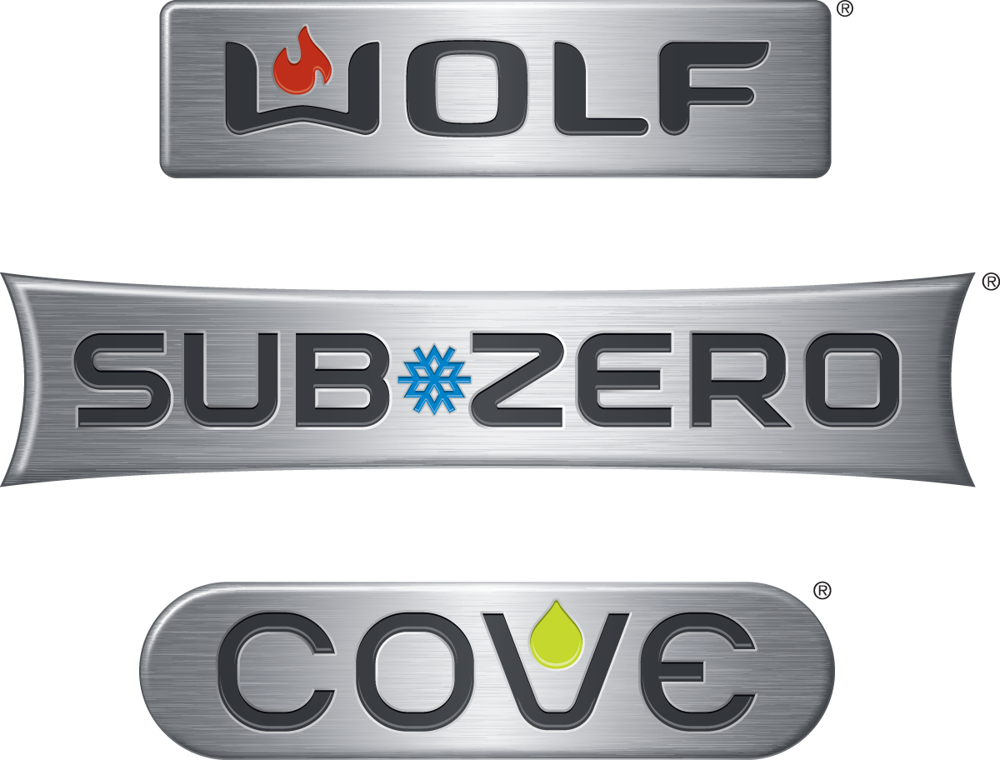
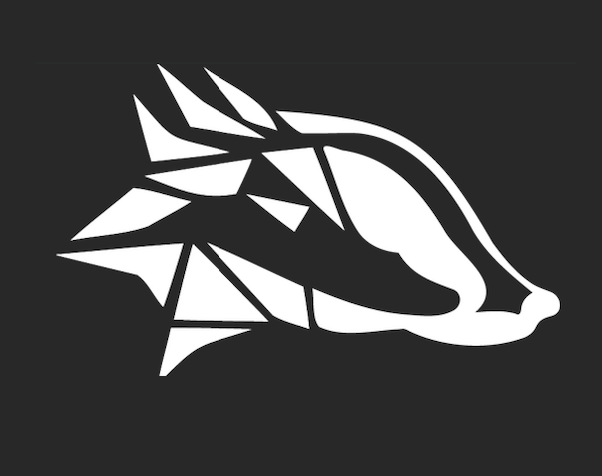

This is my expereince page which is used to show the appliations of what I have learned in my Computer Science courses.
Currently I work at Subzero, which is based here in Madison Wisconsin.
Below is a list of what I have done in my time there:
Built a Test Automation Script for: Direct Method API’s, Azure device twin updates, rpc cmds via RS-485, and Bluetooth cmds for the connected modules in our appliances
Created zipped artifact file from Azure pipelines which builds the mocked-appliance simulator package for Mac, Windows, and Linux
Effectively analyzed test result data to identify bugs caused in the simulator and contributed to our vendor, CAEngineering, to fix
certain instances
Built a Test Case Generator Script to automatically create tests formatted in an excel file and post them to TestRail
Contributed to investigation tasks to identify bugs in our Mobile App and appliance simulator
Gave a 15-minute presentation about my co-op experience in front of my peers and my superiors
If you want to learn more about the company you can click on the image below

I am also involved with Badger Blockchain, which is a club here at UW-Madison. Below is a description of what I have done:
Designed technical projects to be taught to students during meetings
Lectured about blockchain functions
If you want to learn more about the club you can click on the image below
